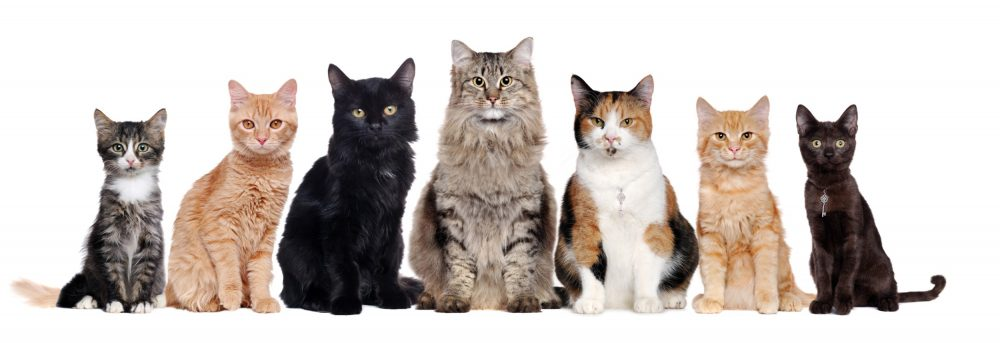

O gato (felis catus) é um mamífero carnívoro e quadrúpede pertencente à família Felidae e à ordem carnívora. É um animal doméstico apreciado por caçar ratos e ratazanas. Este animal possui unhas retráteis, ouvidos e olfação bem aguçados, uma notável visão noturna e um corpo flexível, musculoso e compacto. Trata-se de um animal com boa memória e com capacidade de aprender por meio da observação e da experiência.
Considerando esse fato, e também o grande número de gatos abandonados e maltratados; é sempre bom lembrar-se da importância da posse responsável desses animais, analisando a possibilidade de sua castração, evitando a superpopulação e propiciando um comportamento mais dócil ao seu animal de estimação. Além disso, a posse responsável requer a disponibilização de alimento de qualidade, cuidados veterinários regulares e quando houver algum problema de saúde, e também o ato de dar carinho e atenção ao bichano, evitando deixá-lo sozinho por muito tempo.
Não se sabe ao certo qual foi o primeiro povo a domesticar o gato, embora sua domesticação esteja associada aos egípcios a partir do gato selvagem africano, há mais de 3000 anos a.C.
Existem aproximadamente 70 espécies de gatos conhecidas. As maiores diferenças são o comprimento da cauda e o aspecto geral, visto que variam menos do que as raças de cães. As raças menores variam de 2 a 3 kg e as maiores de 7 a 9 kg. Até hoje, as tentativas de criar raças muito pequenas ou muito grandes fracassaram.
O corpo do gato doméstico é bastante flexível, seu esqueleto está formado por 230 ossos (o esqueleto humano, embora muito maior, tem apenas 206 ossos), sua pélvis e ombros estão ligados à coluna vertebral com muito mais folga do que em outros quadrúpedes. A grande habilidade que o gato possui para pular se deve à desenvolvida musculatura. O rabo o auxilia na estabilidade quando salta ou cai.
O corpo do gato doméstico é bastante flexível, seu esqueleto está formado por 230 ossos (o esqueleto humano, embora muito maior, tem apenas 206 ossos), sua pélvis e ombros estão ligados à coluna vertebral com muito mais folga do que em outros quadrúpedes. A grande habilidade que o gato possui para pular se deve à desenvolvida musculatura. O rabo o auxilia na estabilidade quando salta ou cai.
O corpo do gato doméstico é bastante flexível, seu esqueleto está formado por 230 ossos (o esqueleto humano, embora muito maior, tem apenas 206 ossos), sua pélvis e ombros estão ligados à coluna vertebral com muito mais folga do que em outros quadrúpedes. A grande habilidade que o gato possui para pular se deve à desenvolvida musculatura. O rabo o auxilia na estabilidade quando salta ou cai.
O envelhecimento do gato não é gradual como o do ser humano, mas de forma abrupta, dura mais ou menos um ano e, depois disso, o animal morre. Um gato velho desenvolve cataratas, fica mais lento e perde a olfação. Geralmente dorme o dia todo, sem desenvolver nenhuma outra atividade. A expectativa de vida deste animal é de 15 anos.